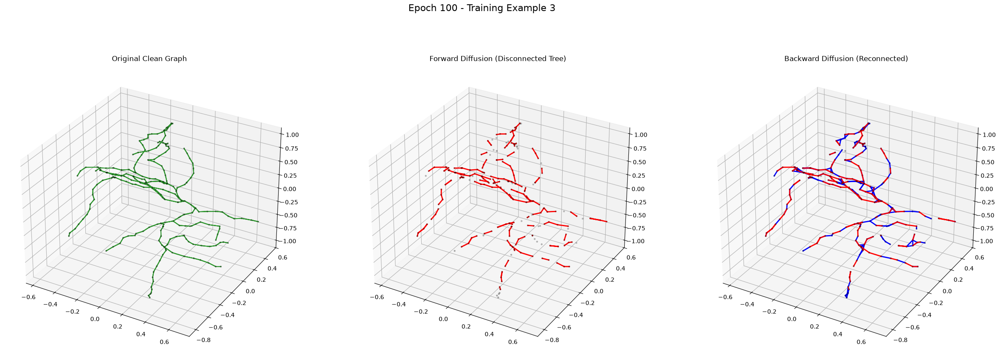

marp: true theme: default paginate: true
Sliding-Window Volumetric Reconstruction
Generative models hallucinate. To prevent the pipeline from mistakenly connecting disjoint neurons or background artifacts, NeuroDiffusion implements a Three-Layered Gauntlet.
Trained as a binary classifier/discriminator:
- Architecture: A 2-layer EGNN operating over the generated path sequence, concatenated with the fragment contexts. Outputs a scalar predicting the Structural Neural Gap.
- Training: Optimized via BCE against true biological paths (Label 1) and corrupted/hallucinated paths (Label 0).
- Effect: Heavy penalty for mathematically sound but biologically impossible structures (e.g., hairpin turns).
The ultimate physical ground-truth validation during live inference over TIFF stacks.
$$ \text{Cost}B(X) = - \frac{10}{|X|} \sum(x_i) \rangle| $$} \text{Vesselness}(x_i) \cdot |\langle \text{Tangent}(x_i), \text{StepDir
graph LR
CPU[CPU Producer: Pre-computes Vesselness] --> Q[Thread-Safe Queue]
Q --> GPU[Multi-GPU Consumer: Predicts Connections]
GPU --> SWC[SWC Export: Maintains Parent Topologies]
